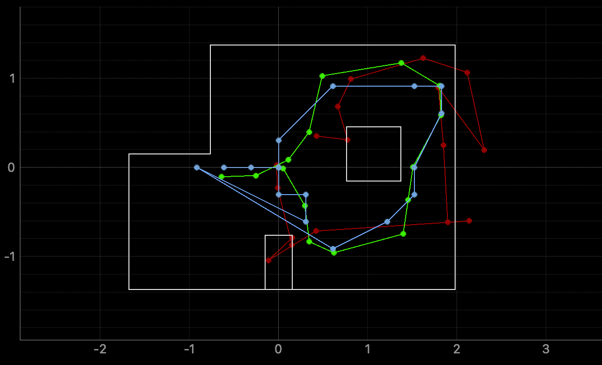

Lab 11 LOCALIZATION IRL
The purpose of this lab is to take what we learned from Lab 10 and then be able to localize on my actual robot using an optimized version of the code. I used my data from lab 9 to simulate the Bayes Filter on the robot since those readings were collected at every point through spinning on its axis.
LOCALIZATION SIMULATION
I started off with testing the localization simulation that was provided to us and this is what it resulted in.

The green trajectory is the ground truth path. The blue path is the trajectory according to the robot's belief. The red path is the trajectory based on solely the odometry data. Some differences could be because of the slight change of the rectuangular grid and the belief map.
OBSERVATION LOOP
After that visualization, I went through the skeleton jupyter notebook that was provided to begin to integrate the robot with the localization code. This meant that I had to implement the perform_observation_loop function of the class RealRobot. This function performs the loop behavior by having the robot do a 360 degree turn while collecting angular sensor data beginning from the same orientation every time.
To integrate with the simulator, I needed 18 points of data at each marked point. From lab 9, my code recorded a 15 measurements every second for a total of 150 data points and usually in increments of 40 degrees. This data was not accurate enough for the observation loop function so I adapted the Arduino code to maintain a spin of 20 degrees per second on the PID side. This code snippet is pasted below.
Because of the map from Lab 9 being very poor after having good polar plots, I also adjusted the bluetooth command itself to collect data at specific values instead of all the time and then having to do the post processing. After making sure I have the angle I want, then only do I execute the PID and send the command over via bluetooth. This code snippet is seen below.
After all of this - I finally implemented this all within my perform_observation_loop function with the associated notification handler as seen in this code snippet below.
RUNNING LOCALIZATION
(5,-3)
###
(5,3)
###
(0,3)
###
(-3,-2)
###
-----------------------------------------------------------------------------
Surprisingly enough, the robot was better at localizing